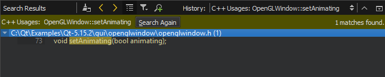
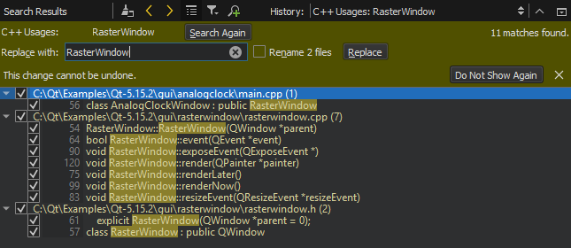

Refactoring
Refactor code to:
- Improve internal quality of your application
- Improve performance and extensibility
- Improve code readability and maintainability
- Simplify code structure
Qt Creator allows you to quickly and conveniently apply actions to refactor your code by selecting them in a context menu. For more information, see Applying Refactoring Actions.
By default, the refactored files are saved automatically. To disable this feature, deselect Tools > Options > System > Auto-save files after refactoring.
Finding Symbols
To find instances of a specific symbol in your Qt C++ project, place the cursor on the symbol in the editor and select Tools > C++ > Find References to Symbol Under Cursor or press Ctrl+Shift+U.

To view the same results color-coded according to the access type, such as read, write, or declaration, select Tools > C++ > Find References with Access Type.
Note: You can also select Edit > Find/Replace > Advanced Find > C++ Symbols to search for classes, functions, enums, and declarations (including type aliases) either from files listed as part of the project or from all files that are used by the code, such as include files.
Finding QML Types
To find instances of a specific QML type in a project, place the cursor on the type and select Tools > QML/JS > Find References to Symbol Under Cursor or press Ctrl+Shift+U.
Viewing Search Results
Qt Creator searches from the following locations:
- Files listed as a part of the project
- Files directly used by the project files (for example, generated files)
- Header files of used frameworks and libraries
The Search Results pane shows the location and number of search hits in the current project.

You can browse the search results in the following ways:
- To go directly to an instance, double-click the instance in the Search Results pane.
- To move between instances, click the
 (Next Item) button and
(Next Item) button and  (Previous Item) button in the Search Results pane.
(Previous Item) button in the Search Results pane. - To expand and collapse the list of all instances, click the (Expand All) button.
- To filter the search results for the usage of symbols according to access type, such as read, write, or declaration, click the
 (Filter Tree) button and select the access type.
(Filter Tree) button and select the access type. - To clear the search results, click the
 (Clear) button.
(Clear) button. - To start a new search, click the
 (New Search) button.
(New Search) button.
Renaming Symbols
You can rename symbols in all files in a project. When you rename a class, you can also change filenames that match the class name.
To rename a C++ symbol in a project, place the cursor on it and select Tools > C++ > Rename Symbol Under Cursor or press Ctrl+Shift+R. Use the keyboard shortcut to rename Python symbols. To rename a QML type in a project, select Tools > QML/JS > Rename Symbol Under Cursor or press Ctrl+Shift+R.
The Search Results pane shows the location and number of instances of the symbol in the current project.

To replace all selected instances, enter the name of the new symbol in the Replace with text box, and select Replace. To omit an instance, deselect the check box next to the instance.
Note: This action replaces all selected instances of the symbol in all files listed in the Search Results pane. You cannot undo this action.
If the symbol is a class, select the Rename files check box to also change the filenames that match the class name.
Note: Renaming local symbols does not open the Search Results pane. The instances of the symbol are highlighted in code and you can edit the symbol. All instances of the local symbol are changed as you type.
Multi-Cursor Editing
To apply a change to several places simultaneously, press and hold Alt, and click to place cursors in several places. Any changes you make are applied simultaneously at all the cursor positions.
Use the arrow keys to move all the cursors up and down. The Home and End key move all the cursors to the beginning or to the end of the line.
Press and hold Alt and double-click strings to select several strings simultaneously.
Press Esc to remove all the cursors and selections.